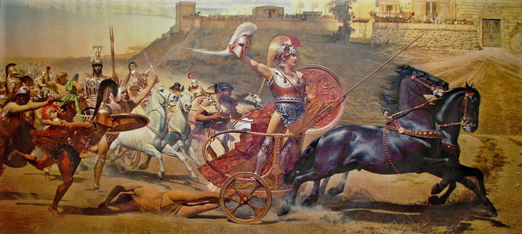

chapter18.1--handout
Background Information
教堂的各种英文名称
Brett和Jake在散步的途中经过莱圣福明礼拜堂（"Is that San Fermin's?" Brett looked at the yellow wall of the chapel.）并看到了许多人在教堂里做祷告（Many people were praying. ）
这里出现的教堂用的是chapel这个单词，在西方国家，表示教堂的单词有很多，我们今天来一起了解一下它们之间的差异吧！
1. Church
church我们最熟知的词，广义所说的“教堂”，可以看作是所有宗教活动（如弥撒Mass）发生场所的统称。而事实上，church更适合被翻译成教会，不仅仅单指一座建筑，而是堂区所在了。
2. Cathedral
我们常常把Cathedral翻译成“大教堂”，难道大一点的教堂就叫Cathedral么？答案是否定的，其实Cathedral的正确翻译是“主教座堂”。它的原意是指“主教的座位”，是一个教区里主教（Bishop）所在的地儿。它们大多都拥有极其精美和古老的内饰，华丽的内部结构，以及令人惊叹的彩绘玻璃。
3. Abbey
很多人知道这个词是从两个地方，一个是伦敦最主要的宗教活动建筑西敏寺（Westminster Abbey），另一个是英剧《唐顿庄园》（Downton Abbey）. Abbey的意思是“修道院”、“寺”，通常规模不小，一般包括好几座教堂、神学院、隐修会和图书馆等等，院长就跟校长差不多，在修道院中掌管很大的权力。
4. Basilica
这个词不是很常见，但是在宗教建筑上具有很重要的地位。如果你对建筑略有研究，那么你可能听说过，这是一个形容古罗马建筑形式的词。随着时间推移，它也用来赋予有特殊地位的教堂，中文的正式名称为“宗座圣殿”。
5. Chapel
一般指规模和结构比较小的教堂，在中文中的正式翻译是“小教堂”。可以为独立建筑，也可以附属某个机构（比如大学、医院），为其提供宗教服务。当然也有非常显赫的Chapel，比如西斯庭教堂（Sistine Chapel），因米开朗基罗绘制的著名壁画“创世纪”和“最后的审判”，重要地位不言而喻。
很多新人喜欢的教堂婚礼热门举行地都是Chapel. 例如冲绳的白色教堂Aqualuce Chapel、巴厘岛的悬崖教堂Ritual Chapel、美国的木质教堂Mildred B. Cooper Memorial Chapel.
Vocabulary
stiffen
v. 变僵硬，变僵直，绷紧
原文：After a little I felt Brett stiffen beside me, and saw she was looking straight ahead.
过一会儿，我发觉勃莱特在我旁边挺直了腰板，看见她的眼睛直勾勾地望着前面。
💧stiffen 还有"变强硬，变坚定"的意思，比如：The threat of punishment has only stiffened their resolve (= made them even more determined to do sth) .
惩罚的威胁益发坚定了他们的决心。
strew
v. 把…布满，在…上布满（ to cover a surface with things）
原文: All the bags were opened and clothing was strewn around.
所有的提包都开着，衣服扔得到处都是。
💧strew 还有“散播、遍布”的意思，比如：By the end, bodies were strewn all round the building.
最后，大楼四周遍布着死尸。
Crush Your Problems

The fiesta was solid and unbroken, but the motor-cars and tourist-cars made little islands of onlookers.
参加节日活动的人们挤得水泄不通，川流不息，但汽车和旅游车边却围着一圈圈观光者。
💧表达精讲
①solid and unbroken 是指“人潮密集，水泄不通”（solid和unbroken在这里都可以理解为“没有空隙”的意思）；
②made little islands of onlookers “围着一圈圈观光者”；这里是指在汽车和旅游车周围的人群独立地形成了一个个圈子（像独立的岛屿一样，和其他参加节日活动的人们分隔开）；onlooker表示“旁观者”从look on演变而来，look on是“在旁边观看”的意思，比如stand by也有“袖手旁观”的意思，所以bystander也是指“旁观者”。


Inside the cafés men with their hands gripping the table, or on each other's shoulders, were singing the hard-voiced singing.
人们双手紧抓住桌子，或者互相搂着肩膀，直着嗓门唱歌。
💧表达精讲
were singing the hard-voiced singing “直着嗓门唱歌”，sing the...singing 表示“用什么方式唱歌”，hard-voiced则是指用力扯着嗓子来发出声音的。

He tipped the table so that all the beers and the dish of shrimps went over in a crash.
他把桌子一掀，于是桌上所有的啤酒杯和虾碟都泻在地上，哗啦啦地摔个粉碎。
💧表达精讲
①go over 在这里指“（被）打翻在地上”，over就是“倒下”的意思，比如fall over表示“摔倒”，knock sth over表示“把……碰倒”，topple over表示“倒塌，倾覆”；
②in a crash “发出哗啦的啦声音”，crash指“（东西倒或下）摔发出的碎碰撞声”，比如：The branch came down with/in a crash.（树枝啪啦一声掉落下来。）

"Oh, rot," said Brett. "Don't start proselyting to-day. To-day's going to be bad enough as it is."
“胡说。”勃莱特说。“你今天别来劝诱人家这一套信教啦。今天这个日子看是会是够倒霉的。”
💧表达精讲
proselyte （在美式英语里写作proselytize）指改变“使宗教（或政治）信仰”（to persuade someone to share your beliefs, especially religious or political beliefs）, 可以是指让一个不信教的人信教，或是让原本有信仰的人改信其他宗教。这个词一般带有贬义。
Brett打趣说Jake强调自己是个虔诚的教徒（"I'm pretty religious."）是为了让Brett也能来信教。

He was a continual eavesdropper.
他一贯偷听别人说话的。
💧表达精讲
①continual 本义是“频繁的，持续的”（repeated many times in a way that is annoying）, 而且尤指让人产生不悦的。这里可以理解为“惯常的”，也就是指这个德国的侍者总管“一贯喜欢……”；
②eavesdropper 直译是指“藏在房子的屋檐下的人”（to drop/hang from the eave of a building）, 一般是为了听房子里的人在说什么（so as to hear what is said within）. 因此eavesdropper就是指“偷听别人说话的人，窃听者”（a secret listener to private conversations）. 窃听一般都被认为是不道德（unethical）甚至违法的（illegal）.

He smiled his dirty little pink-and-white smile.
他贼眉鼠眼、齿白唇红地一笑。
💧表达精讲
pink-and-white 并不是直接形容smile，pink可以理解为“双唇或双颊绯红”，而white则是形容牙齿洁白。

Mike lay on the bed looking like a death mask of himself.
迈克尔躺在床上，脸庞活像他死后翻制的面型。
💧表达精讲
like a death mask of himself “脸庞活像他死后翻制的面型”；death mask指一种人死后用石膏或者蜡翻制的面具，一般会作为肖像画的参考物（used for the creation of portraits）或者是做成雕塑（made into sculptures）. 这里是形容Mike躺在床上整个人毫无面色，一动不动，就跟咽气了一样。
Content Analysis
到了狂欢节的最后一天，认清自己无法得到Brett这个事实后，Cohn下定决心离开潘普洛纳（"Is Cohn gone?" Brett asked. "Yes," Bill said. "He hired a car."）并且直到本书末尾他都不会再现身。Brett和Romero这一对“有情人”似乎也终于可以相守在一起，Brett在和Jake独处的时候语气里是显而易见的喜悦——
💧Clue 1:Brett enjoys much in her relationship with Romero.
Evidence 1:Brett was radiant. She was happy. The sun was out and the day was bright.
"I feel altogether changed," Brett said. "You've no idea, Jake."
勃莱特满面春风。她很高兴。太阳出来了，天色亮堂堂的。
“我觉得自己完全变了。”勃莱特说。“你想象不到，杰克。”
Evidence 2:"You know," Brett said, "I'm not worried about him at all. I just feel happy about him."
“你知道，”勃莱特又说，“我一点都不为他担心。我只是为他感到幸福。”
回到旅馆后，Jake目送着Brett走到Romero的房间门口，Brett没有敲门就直接进去了（She did not knock. She simply opened the door, went in, and closed it behind her）, 足见俩人已经十分亲密。接着他按照Brett的嘱托来到Mike的房间，里面的场景十分不堪，Mike仍然在巨大的绝望和崩溃中——
💧Clue 2:Mike is in immense despair.
Evidence 1: Inside the room was in great disorder. All the bags were opened and clothing was strewn around. There were empty bottles beside the bed.
房间里一团糟。所有的提包都开着， 衣服扔得到处都是。床边有几个空酒瓶。
Evidence 2:He opened his eyes and looked at me.
"Hello, Jake," he said very slowly. "I'm getting a little sleep. I've wanted a little sleep for a long time."
他张开眼睛看我。“你好，杰克。”他慢条斯理地说。“我想打个盹儿。好长时间了，我总想打个盹儿。”
Mike不止一次提到，Brett其实陆陆续续地有过不少情人，现在她只不过是把Cohn这个拳击手给抛弃而搭上了斗牛士Romero罢了（"Brett's got a bull-fighter," Mike said. "But her Jew has gone away."）
那么Mike清醒过来之后会如何抉择呢？在不受Romero的同乡们待见的情况下（"They're very angry about me, he says."） Brett又是否会和Romero顺利继续在一起？
Today's Bonus
💧Duel in Western Countries 西方的决斗文化
昨天我们提到的Cohn去找Brett的时候，和Romero干了一架（还有好几个回合）。其实在西方国家的历史和文学作品中，决斗时常出现（不仅包括这种为心爱的女人而战的情况）。今天我们就来一起了解一下决斗~
在莎士比亚（William Shakespeare）的哈姆雷特（Hamlet）中，克劳狄斯教唆奥菲利亚的哥哥和哈姆雷特决斗，两人的决斗不分彼此，最后一起中剑身亡。这样的场景屡见不鲜，欧洲的贵族为了荣誉、爱情、军功、解决司法纠纷等任何理由都会进行决斗。
欧洲贵族的决斗传统来自日耳曼人的尚武文化。如果再远一些，可以追溯到古希腊的武装斗争解决纠纷的文化传统。在荷马史诗（Homer's Epic）《伊利亚特》（Iliad）中也有这样的情节：两个男人为证明自己是美女海伦的主人而在宙斯面前进行决斗，输掉的一方就是撒谎者，发动了著名的特洛伊战争（Trojan War）.

到了中世纪的时候，司法决斗被西欧各国广泛采用。例如，一个人在法官面前控告另一个人犯了某种罪行，而对方坚决不承认，此时法官就会让两人决斗，谁在决斗中获胜就能赢得官司（lawsuit）. 而输的一方就算侥幸不死，也要受到法律的制裁（sanction）.
中世纪之后，欧洲各国的贵族男子都身佩长剑，随时准备与别人拼个你死我活——无论理由是多么微小或荒谬。因为在他们看来，决斗本身就是富有骑士精神和男子气概（masculinity）的象征。在中世纪骑士的小说里，我们经常能看到某位骑士发誓（swear）为心爱的贵夫人效劳的情节，这里的“效劳”便意味着：如果有人敢冒犯您，我将立刻和他决斗，不死不休！
我们都知道著名的俄国诗人普希金（Pushkin）, 他逝世时年仅37岁，而他是死于一场决斗。起因是他被誉为“圣彼得堡的天鹅”的妻子娜塔丽娅，一名宪兵队长乔丹特斯疯狂爱上他的夫人，写匿名信笑普希金是乌龟，他忍无可忍，为了名誉，他与丹特斯进行决斗不幸中枪而死。当时的报纸刊载：“俄罗斯诗歌的太阳殒落了”。